K-EXAONE 2.5 공개와 LG의 벤치마크
LG AI(Artificial Intelligence)연구원이 11월 9일 K-EXAONE 2.5의 API를 무료로 열었어요. LG AI연구원은 정부가 국가대표 AI 모델을 고르는 독자 AI 파운데이션 모델 프로젝트(줄여서 독파모)에 참여한 팀이에요. 이번 공개는 API뿐이에요. 모델 웨이트는 아직 공개하지 않았어요.
아래는 LG AI연구원의 공지 화면이에요. 첫 문단 굵은 글씨에 'API를 무료로 공개'와 접속 주소 docs.exaone.ai가 함께 적혀 있어요.
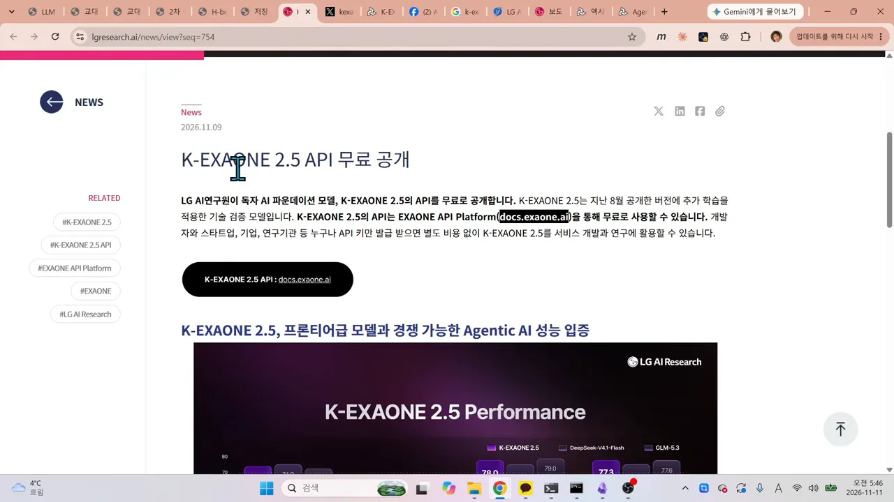
발표자는 지난 8월 버전에서 약 8주 만에 성능을 많이 끌어올렸다는 LG 쪽 설명을 전해요.
LG가 내세운 벤치마크 네 개
LG는 오픈 웨이트 모델 가운데 잘 알려진 DeepSeek-V4.1-Flash, GLM-5.3과 비교했어요. 그래프에서 각 묶음의 맨 왼쪽 진한 보라 막대가 K-EXAONE 2.5예요. 가운데가 DeepSeek-V4.1-Flash, 오른쪽이 GLM-5.3이에요.
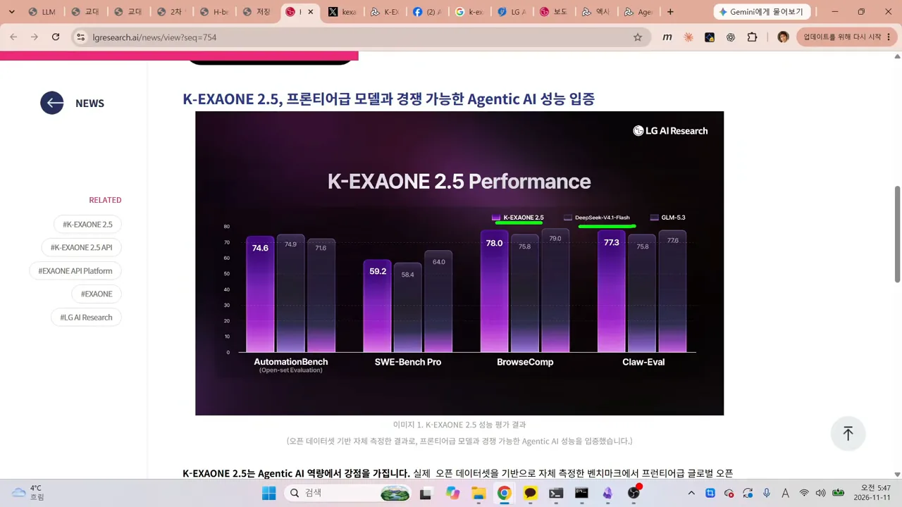
그래프 숫자를 표로 옮기면 이래요. 무엇을 재는지는 그래프 아래 LG 설명문에서 가져왔어요.
| 벤치마크 | 무엇을 보나요 | K-EXAONE 2.5 | DeepSeek-V4.1-Flash | GLM-5.3 |
|---|---|---|---|---|
| AutomationBench (Open-set) | SaaS 도구로 업무 자동화하기 | 74.6 | 74.9 | 71.6 |
| SWE-Bench Pro | 실제 소프트웨어 개발·수정 | 59.2 | 58.4 | 64.0 |
| BrowseComp | 웹을 뒤져 필요한 정보 찾기 | 78.0 | 75.8 | 79.0 |
| Claw-Eval | 업무 환경에서 에이전트 문제 해결 | 77.3 | 75.8 | 77.6 |
1등은 아니지만 중국의 대표 모델 두 개와 어깨를 나란히 한다는 게 LG의 주장이에요. 네 개 모두 에이전틱 AI 역량을 재는 벤치마크예요. LG가 공개 데이터셋으로 직접 잰 점수라는 점도 설명문에 적혀 있어요.
설명문 아래쪽에서 LG는 코딩도 강조해요. 코드 생성과 디버깅부터 리팩토링, 테스트 코드 작성까지 돕는다고 해요. 발표자는 이걸 '코딩을 잘한다는 얘기'로 정리해요.
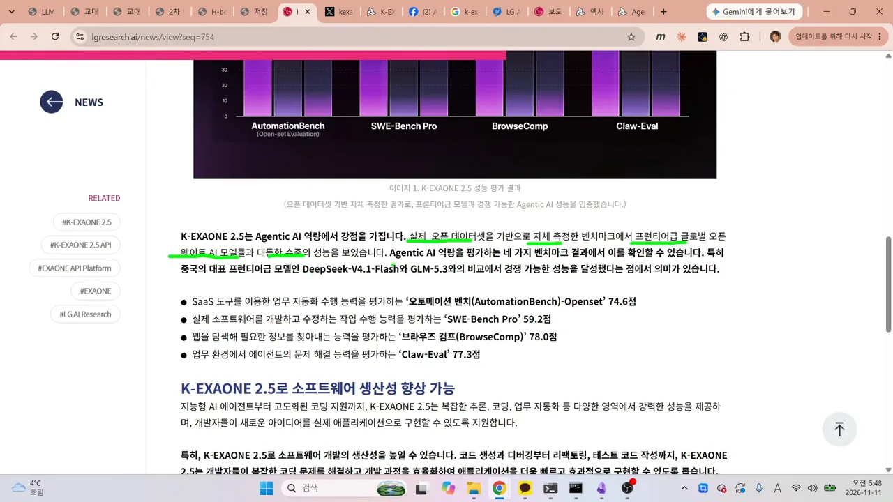
무료 API로 돌벤치 14문제 풀기
docs.exaone.ai에 들어가면 EXAONE API Platform 문서가 열려요. 오른쪽 위 검은 'API Key 발급하기' 버튼을 누르면 키를 받아요. 왼쪽 메뉴 Endpoints 아래에 K-EXAONE 2.5가 있어요.
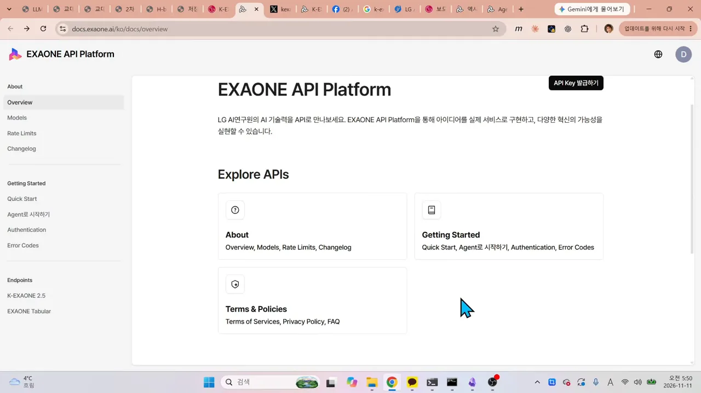
돌벤치 14문제 결과
발표자는 이 키로 자기 테스트 세트인 돌벤치 14문제를 돌렸어요. 1~9번은 추론·수학·논리, 10·13번은 토목 공학 계산, 11·12·14번은 웹앱을 만드는 코딩 문제예요. 결과는 이래요. 시간과 토큰은 영상 08:22의 결과표에서 옮겼어요.
| 번호 | 문제 | 결과 | 점수 | 시간 | 토큰 |
|---|---|---|---|---|---|
| 1 | 문자열 패턴 추론 | 정답 | 100 | 48.7초 | 1,264 |
| 2 | 일차방정식 풀기 | 정답 | 100 | 8.8초 | 324 |
| 3 | 색상 패턴 반복 | 정답 | 100 | 2.7초 | 178 |
| 4 | 순서 추론 | 정답 | 100 | 5.2초 | 314 |
| 5 | 모자 색깔 논리 퍼즐 | 검은색, 정답 | 100 | 66.2초 | 1,534 |
| 6 | 가짜 동전 찾기 | 세 번, 정답 | 100 | 77.7초 | 2,172 |
| 7 | 아버지 나이 | 84세, 정답 | 100 | 6.2초 | 283 |
| 8 | 범인 찾기 논리 | B 지목, 정답 | 100 | 8.4초 | 414 |
| 9 | 8면체 주사위 확률 | 정답 | 100 | 38.4초 | 1,342 |
| 10 | RC(Reinforced Concrete)보 필요 철근량 | 4,254, 정답 | 100 | 469.6초 | 15,652 |
| 11 | 2차 방정식 웹앱 | 그래프 안 나옴, 실패 | 0 | 922.8초 | 26,428 |
| 12 | H빔 단면 제원 웹앱 | 단면적 11,700mm², 성공 | 100 | 688.8초 | 20,784 |
| 13 | H빔 최대 응력 | 105.8MPa, 정답 | 100 | 149.3초 | 4,221 |
| 14 | 교대 단면도 웹앱 | 한 번 수정 후 성공 | 75 | 1,404.8초 | 57,466 |
11번: 수식은 됐는데 그래프가 비었어요
2차 방정식을 풀어 보여 주는 웹앱이에요. 근의 공식 풀이는 수식으로 깔끔하게 렌더링됐어요. 그런데 아래 '그래프' 칸은 설명 한 줄만 있고 비어 있어요. 콘솔을 열어도 오류가 없었어요. 다른 모델에게 원인을 물어보니 차트를 그리는 부분에 오류가 있었다고 해요.
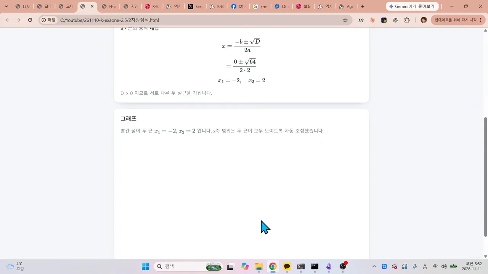
12번: H빔 단면 계산기
H빔의 플랜지와 웹 치수를 넣으면 단면을 그리고 단면적을 계산하는 앱이에요. 오른쪽 아래 '단면적 계산 과정'에 상부 플랜지 4,500, 하부 플랜지 4,500, 웹 2,700을 더해 11,700mm²가 나와요. 입력값을 바꾸면 그림과 계산이 같이 바뀌었어요.
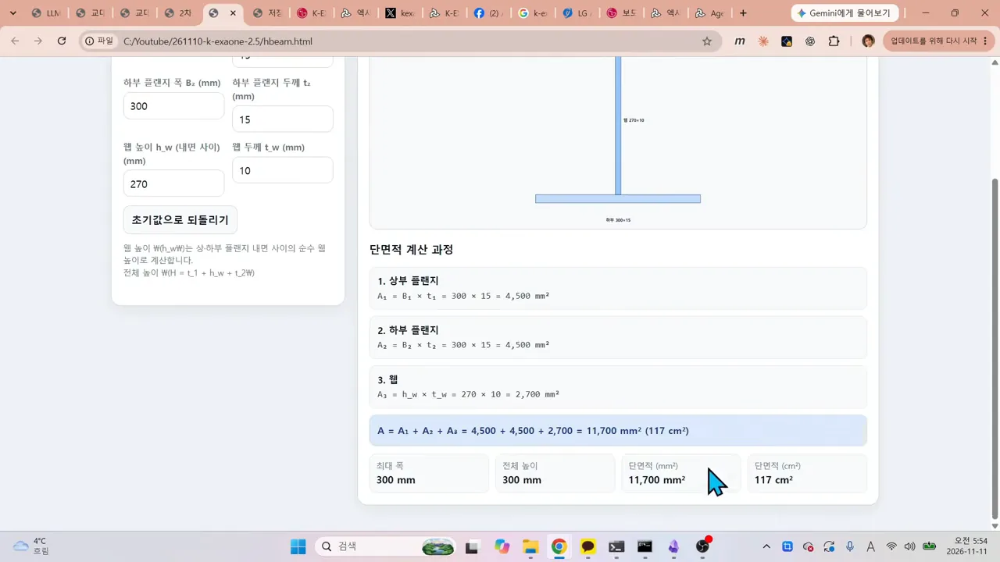
14번: 교대 단면도는 한 번 고쳐서 성공
교량 끝을 받치는 교대의 단면도를 그리는 앱이에요. 프롬프트가 길고, 줌인·줌아웃도 되게 해 달라고 했어요. 첫 결과는 줌과 이동은 됐어요. 그런데 위쪽과 오른쪽 치수선에 숫자가 없어요.
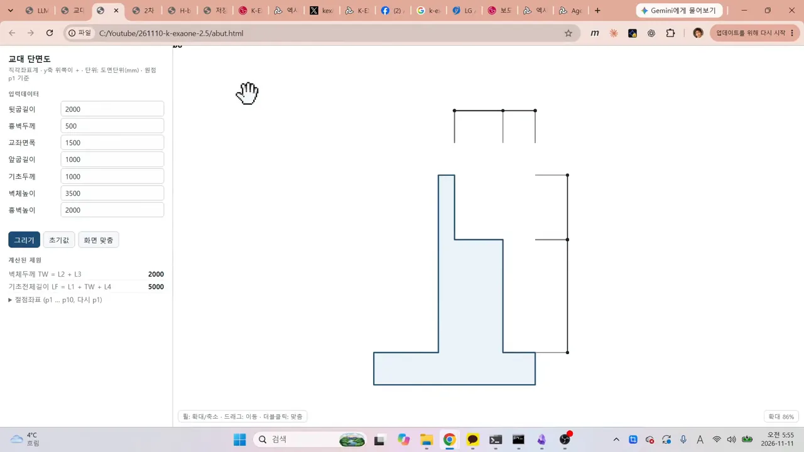
발표자가 '신택스가 빠졌고 치수 몇 개가 없다'고 한 번 지적하자, 고친 코드에서는 치수가 모두 붙었어요. 위쪽에 3000·500·1500·1000, 오른쪽에 2000·3500·1000이 보여요. 한 번 수정해서 맞힌 문제라 75점을 줬어요.
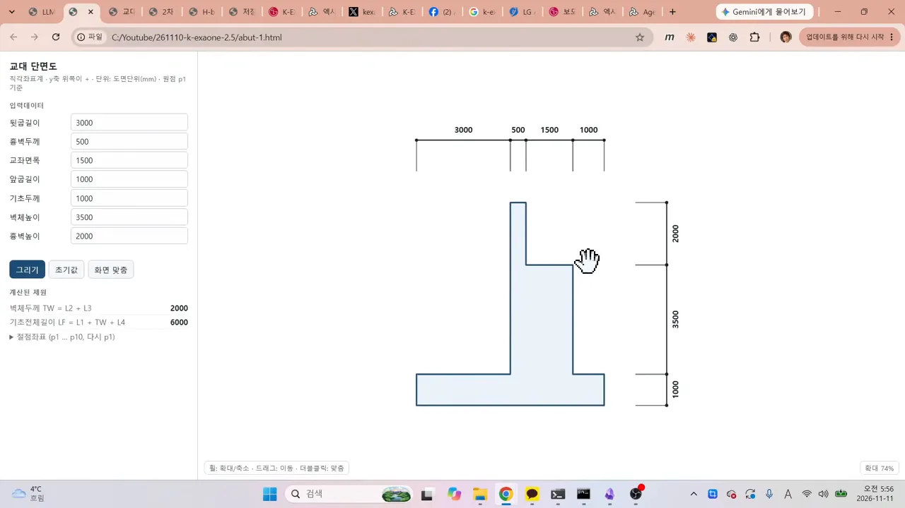
91점, 국내 모델 중 1위
14문제 합계는 1,275/1,400점, 백분율로 91점이에요. 같은 시트에 이전 버전 기록도 있어요. K-EXAONE 2는 7월 말에 발표됐고, 발표자가 8월 8일에 시험했을 때 71점이었어요. 그때는 네 문제를 틀렸어요. 11번은 그때도 틀렸고, 14번은 그때 실패했지만 이번엔 한 번 수정으로 살렸어요. 그렇게 20점이 올랐어요.
국내 모델만 걸러 보면
발표자는 시트에서 국가(Nation) 열을 Korea로 거르고 14문제 점수 열(P14)로 내림차순 정렬했어요. 노란 줄이 K-EXAONE 2.5이고, 바로 아래 Motif-3-Beta와 Exaone 4가 86%예요. 10번째 줄쯤에 71%인 K-Exaone-2도 보여요.
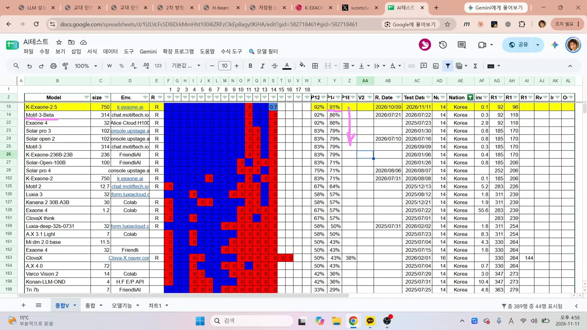
영상에서 언급한 국내 모델만 막대로 그려 보면 순서가 한눈에 들어와요.
2위 Motif-3-Beta는 발표자가 7월에 시험한 모델이에요. 8월 독파모 평가에서 이 모델의 회사가 탈락하면서 논란이 컸어요. 발표자는 AAII(Artificial Analysis Intelligence Index) 점수도 국내 모델 중 가장 높았는데 떨어졌다고 짚어요. Exaone 4도 86점으로 공동 2위예요. Solar pro 3 같은 모델은 79점대예요.
해외 모델과 비교하면 몇 달 차이일까요?
91점이 어느 정도인지 보려고 발표자는 비슷한 점수를 받은 해외 모델을 찾아봐요. 시트의 Test Date 열에 각 모델을 시험한 날짜가 있어서, 같은 점수를 언제 찍었는지 비교할 수 있어요.
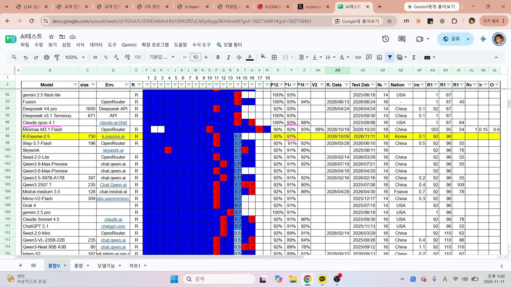
화면에 나온 날짜로 정리하면 이래요.
| 모델 | 점수 | 시험한 날 | K-EXAONE 2.5와의 시차 |
|---|---|---|---|
| Claude Opus 4.1 | 93점 | 2025년 8월 6일 | 약 1년 3개월 |
| Qwen3.8-Max-Preview | 91점 | 2026년 7월 21일 | 3~4개월 |
| Mimo-V2-Flash | 91점 | 2025년 12월 17일 | 약 11개월 |
| Grok 4 | 91점 | 2025년 7월 10일 | 약 1년 4개월 |
Claude Opus 4.1이 작년 8월에 받은 점수를 K-EXAONE 2.5가 올해 11월에 비슷하게 받았어요. 점수는 조금 낮아요. 그래서 1년쯤 차이가 난다고 볼 수도 있다는 게 발표자의 해석이에요. Grok 4는 영상에서 '올해 7월'이라고 말하지만, 화면의 날짜는 2025년 7월 10일이에요. 표에는 화면 날짜를 따랐어요.
그래도 잘 알려진 모델들이 몇 달 전 받은 점수와 같은 91점이니, 나름 괜찮은 점수라는 게 발표자의 평가예요.
점수보다 아쉬운 속도
점수만큼 속도도 봐야 해요. K-EXAONE 2.5는 14문제를 푸는 데 3,897.6초를 썼어요. 1시간이 넘는 시간이에요. 결과표 맨 아래 합계 줄에 점수, 시간, 토큰이 나란히 있어요.
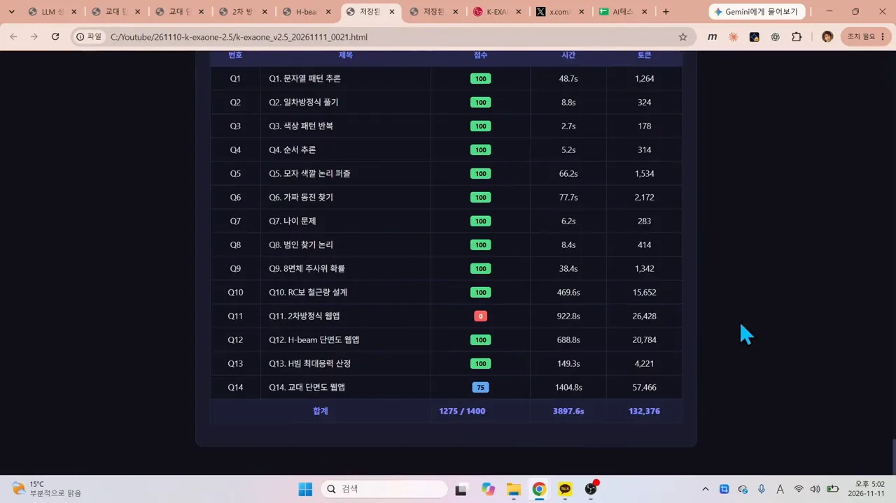
LG가 비교 상대로 삼은 DeepSeek-V4.1-Flash는 10월 17일에 같은 14문제를 풀었어요. 합계 줄을 보면 1,400/1,400 만점에 371.8초, 토큰 90,882개예요.
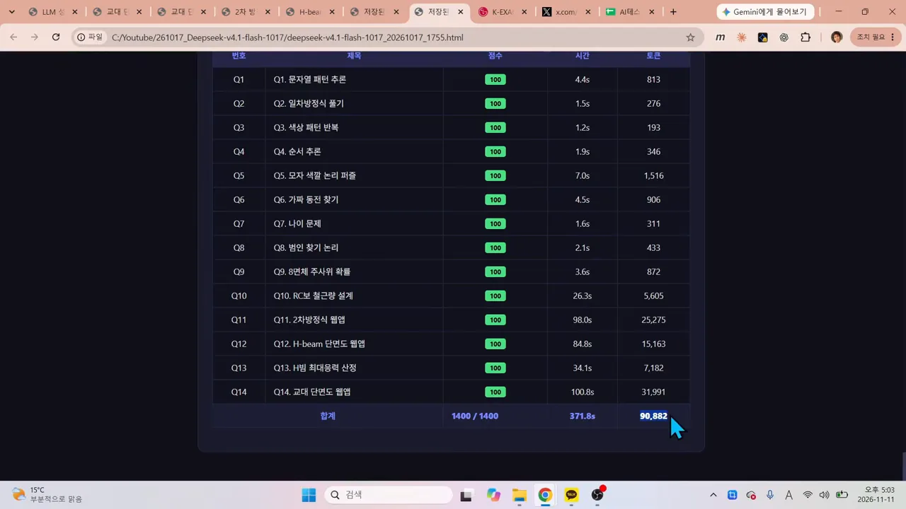
두 합계를 같은 눈금으로 그리면 차이가 어디서 나는지 보여요.
그래서 발표자는 속도 문제만 개선하면 K-EXAONE 2.5도 괜찮은 모델이 될 거라고 봐요.
12월 독파모 최종 선정을 앞두고
발표자에 따르면 독파모 최종 선정은 12월에 있어요. 그 평가를 앞두고 Solar, SK텔레콤의 A.X 같은 경쟁 모델도 곧 성과를 공개할 거라고 내다봐요. 국내 모델 성능이 더 좋아지길 바란다는 말로 영상을 마무리해요. 테스트 시트와 문제 프롬프트는 영상 설명란에 링크돼 있어요.